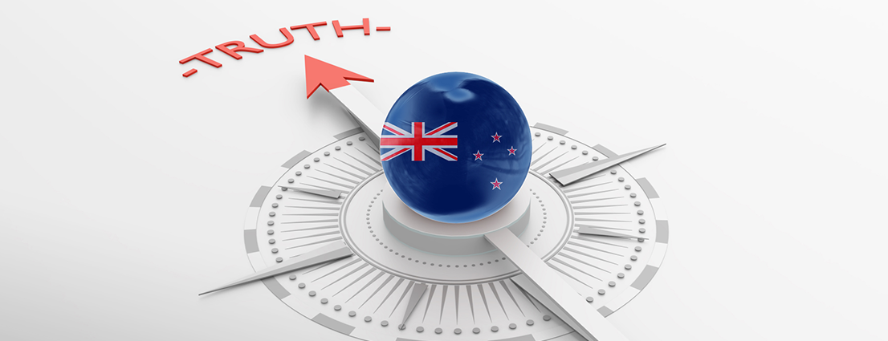

Tentang
PERDANA BUSINESS CO, TERHAD adalah memberi tumpuan kepada derivatif kewangan pembekal perkhidmatan dagangan dalam talian (nama jenama: PRIBIZCO)., Terutamanya yang terlibat dalam saham, dana, insurans, komoditi, CFD CFD dan perniagaan perdagangan margin pertukaran asing. Pada akhir 2017, PRIBIZCO beroperasi di lebih daripada 70 buah negara di seluruh dunia, yang mempunyai pejabat di lebih daripada 20 buah negara. Dengan pertumbuhan berterusan perniagaan, PRIBIZCO akan terus menubuhkan pejabat perwakilan di tempat lain, untuk memberikan perkhidmatan yang berkualiti dan peluang pelaburan yang selamat untuk lebih ramai pelanggan.

PRIBIZCO oleh Jawatankuasa Perkhidmatan Kewangan Vanuatu (VFSC) peraturan, beberapa peraturan: 14636. pematuhan ketat dengan Akta Suruhanjaya Vanuatu Vanuatu Perkhidmatan Kewangan 1993 No. 35 yang digubal oleh Parlimen. Selain PRIBIZCO akan memohon peraturan yang lebih perkhidmatan kewangan, dengan lebih banyak untuk memberi perlindungan kepada pelabur. Sehingga kini, PRIBIZCO terkumpul hampir satu juta perkhidmatan pelanggan, perolehan kekal dalam kedudukan 20 teratas.
PRIBIZCO sentiasa mematuhi "teknologi pertama, perkhidmatan pertama" falsafah, untuk menyediakan pelabur global dalam derivatif kewangan sehingga lebih daripada 200 produk. Sambil menyediakan untuk akhir PC, kedua-dua perisian dagangan akhir mudah alih, sehenti perdagangan. Penggunaan STP-akaun ECN mod pengurusan sub-akaun, dan mempunyai sistem CRM interaktif kuat untuk memberikan perkhidmatan yang berkualiti dan dagangan yang mudah persekitaran untuk pelabur
anugerah antarabangsa
Pematuhan Kumpulan Wang Keselamatan Pengenalan kepada Suruhanjaya Perkhidmatan kewangan Vanuatu
Suruhanjaya Perkhidmatan kewangan Vanuatu (VFSC) telah ditubuhkan pada Disember 1993 berikutan penggubalan oleh Parlimen Vanuatu Vanuatu kewangan Perkhidmatan Suruhanjaya Akta No. 35 tahun 1993. Sebelum itu, kami adalah Syarikat berdaftar, mengambil alih Kementerian Kewangan sejak tahun 1971. Selepas kemerdekaan pada Julai 1980, Kerajaan British menggunakan Kementerian Kewangan dan pengurusan ekonomi.
VFSC yang dilantik sebagai Pesuruhjaya sebagai Ketua Pegawai Eksekutif. Pesuruhjaya yang dilantik oleh Menteri Kewangan dan pengurusan ekonomi laporan kepada Lembaga Pengarah untuk tempoh tiga tahun. Terdapat tujuh ahli, dua ahli kecekapan, dengan kelayakan undang-undang dan pengalaman, dan empat ahli (dua daripada mereka mesti mempunyai kepakaran kewangan dan pengalaman). Lembaga pada masa ini dipengerusikan oleh Encik Banitamwata Rang undang-undang, seorang peguam tempatan yang terkenal.
Cekap dan pengawalan dan penyeliaan kewangan di Vanuatu. Industri kawalan Vanuatu selaras dengan undang-undang kerajaan dan prosedur standard undang-undang antarabangsa, yang telah menjadikan Vanuatu yang diiktiraf sebagai sebuah pusat kewangan yang diiktiraf di peringkat antarabangsa dengan reputasi baik dan rayuan komersil
Atu perkhidmatan kewangan Suruhanjaya dekri No. 35 tahun 1993
Dekri No. 35 1993: klik untuk maklumat lanjut
Senarai berlesen
Kewangan pemegang lesen peniaga: klik untuk maklumat lanjut
Proses siasatan kewangan peniaga
Pribizco Vanuatu kawal selia proses siasatan:klik untuk maklumat lanjut
Keselamatan Maklumat dana pelanggan
Kuarantin dana pelanggan!
PPRIBIZCO dikawal selia oleh VFSC dan sentiasa telah meletakkan keselamatan dana pelanggan pertama, sebagai seorang pelanggan runcit, wang anda akan dimasukkan ke dalam akaun bank PRIBIZCO berjaya, berasingan daripada dana pribizco sendiri, PRIBIZCO hanya sebagai Pemegang Amanah untuk memegang dana, Sekiranya PRIBIZCO kepada pembubaran, dana berasingan pelanggan tidak boleh digunakan untuk memberi pampasan kepada Pemiutang-pemiutang PRIBIZCO atau Bank. a mencatatkan enterprise perkhidmatan kewangan, pribizco boleh bergantung pada drs kepada keazaman pertikaian dengan syarikat-syarikat perkhidmatan kewangan jika pelabur individu mempunyai pertikaian.
Keselamatan Maklumat
1, halaman keseluruhan untuk mengambil cebisan 256 penyulitan SSL.
2, tertanam identiti sebenar lokasi rahsia.
3, ikut piawaian keselamatan Audit Web Turst ditubuhkan oleh American Institute of Certified Public Accountants.
4. gunakan McAfee terkawal untuk mencegah kecurian identiti dan penipuan kad kredit.
STP/ECN
Platform dagangan forex PRIBIZCO adalah ECN / STP pesanan, data adalah berdasarkan petikan masa nyata data dalam pasaran antarabangsa, platform dagangan pelanggan membeli dan menjual pesanan akan diberikan ke atas Bank-bank antarabangsa, platform dan pasaran antarabangsa adalah lancar, penyebaran sebenar adalah mengikut kecairan pasaran, urusniaga pelanggan adalah benar-benar adil dan terbuka.
Platform dagangan adalah mudah, cekap dan stabil!
Platform dagangan PRIBIZCO MetaTrader 4 adalah mudah dan stabil. Urusan pusat data berkelajuan tinggi memastikan kestabilan dan smoothflow urusniaga pelanggan. Teknologi penyulitan maju untuk memastikan keselamatan maklumat. Software MT4, kuat, fleksibel dan mudah untuk beroperasi, menyokong pelbagai produk kewangan dalam talian perdagangan. Pelbagai perdagangan pelaksanaan fungsi-fungsi, carta yang tidak terhad, sejumlah besar penunjuk teknikal dan lengkung, petunjuk adat dan skrip.
Analisis teknikal lanjutan
Pusat perdagangan merupakan peneraju dalam analisis teknikal, diuruskan oleh para peniaga dan para penganalisis kewangan, dan dipercayai oleh kualiti institusi kewangan di seluruh dunia. Perkhidmatan analisis teknikal pasaran kewangan diberikan kepada 38 bank pelaburan yang terkenal di dunia, dana lindung nilai, Khas peniaga dan broker.
Pribizco direka untuk menyediakan peniaga-peniaga dengan sokongan pelanggan
Sokongan teknikal yang menyeluruh dan sistem analisis dan Tafsiran maklumat yang sempurna
Ini memberi peniaga-peniaga pemahaman yang lebih mendalam perdagangan!
Dasar privasi
Dasar privasi
Dasar privasi ini menyediakan data yang dikumpul di laman web spritbizCO (dikenali sebagai "PRIBIZCO" dan "Ini Syarikat"), www.pribizco.com, dan sub tapak. Privasi data pelanggan adalah faktor penting, dan PRIBIZCO memelihara kepentingan dan perlindungan data yang anda berikan kepada kami. Seperti yang dinyatakan dalam penyata dasar privasi ini, dengan membuka akaun atau akaun promosi mana-mana PRIBIZCO Laman web www.pribizco.com atau lamannya yang kecil, anda bersetuju untuk di PRIBIZCO menggunakan maklumat peribadi anda dan pengumpulan dan pemprosesan maklumat tersebut.
Penggunaan maklumat peribadi
Sebaik sahaja kami membuka akaun di PRIBIZCO, kami akan mengumpul maklumat untuk mengesahkan identiti anda dan mencipta akaun transaksi anda. Maklumat ini akan membantu kami dalam menyediakan anda dengan perkhidmatan peribadi dan sokongan. Sebahagian daripada maklumat yang kami kumpul termasuk, tetapi tidak terhad kepada, ini: nama anda, maklumat perhubungan, alamat surat-menyurat, alamat e-mel, nombor telefon, personalidentification data, nombor pasport, nombor cukai atau pengenalan, dan lain-lain maklumat yang mungkin diperlukan. Lain-lain maklumat yang dikumpul dinyatakan dalam daftaran kami dan mungkin berubah pada bila-bila masa. PRIBIZCO mengumpul maklumat dari Internet Protocol (IP) alamat, jenis pelayar, sistem pengendalian anda, Cap masa, transaksi urus niaga, dan pembekal khidmat Internet (ISP). Jika anda memutuskan untuk menutup akaun anda dan meninggalkan PRIBIZCO, kami akan menyimpan maklumat anda dan menggunakan mesej anda seperti yang dikehendaki oleh peraturan-peraturan. Dari masa ke semasa, kami akan menghubungi anda untuk berkongsi maklumat atau promosi oleh Syarikat ini. Kecuali anda secara jelas menunjukkan bahawa anda tidak bersetuju dengan jenis maklumat atau promosi.
Biskut
Kuki adalah fail teks kecil yang disimpan pada komputer pengunjung, telefon mudah alih atau peranti lain untuk tujuan rakaman. Biskut menghantar maklumat kembali ke laman web asal atau laman web lain yang mengenal pasti kuih. Cookies boleh menjadi kekal (ini dipanggil biskut kekal) yang terus otak anda sehingga anda menghapuskan mereka, atau untuk sementara waktu (ini dipanggil session cookies untuk) sehingga anda menutup komputer anda. Biskut juga boleh menjadi pihak pertama cookies yang ditetapkan oleh laman web yang telah dilawati, atau pihak ketiga oleh laman web selain daripada orang-orang yang kerap dilawati. PRIBIZCO juga boleh menggunakan penyedia khidmat luar yang bebas untuk mengesan penggunaan trafik rangkaian. 。
Teknologi keselamatan
PRIBIZCO menggunakan penyulitan komunikasi akhir lapisan selamat (SSL) untuk melindungi maklumat yang anda hantar. Teknologi ini digunakan dalam komunikasi anda dengan kami bagi mengelakkan maklumat anda dari menjadi dipintas. Server kami adalah seperti pengawal di belakang firewall untuk melindungi maklumat anda.
Berkongsi maklumat dengan kami ahli gabungan
PRIBIZCO tidak akan berkongsi maklumat peribadi anda dengan gabungan kecuali anda bersetuju secara nyata. Anak-anak syarikat termasuk syarikat-syarikat yang dimiliki oleh PRIBIZCO, syarikat-syarikat yang PRIBIZCO saham, dan Syarikat-syarikat yang memiliki saham dalam PRIBIZCO.
Berkongsi maklumat dengan pihak ketiga
PRIBIZCO tidak akan mendedahkan maklumat peribadi anda kepada pihak ketiga melainkan jika berkenan dengan jelas kepada anda. Peluang untuk pendedahan maklumat kepada pihak ketiga termasuk berkongsi maklumat peribadi anda dengan syarikat-syarikat bersekutu bebas untuk memberikan perkhidmatan yang lebih baik. Syarikat-syarikat PRIBIZCO bebas yang bergabung menjaga kerahsiaan maklumat yang mereka kongsi. Penggunaan maklumat yang diarahkan oleh PRIBIZCO. PRIBIZCO hanya akan mengekalkan maklumat anda dan tidak akan pernah menjual ia kepada pihak ketiga.
Pembetulan kenyataan privasi
Kita boleh membetulkan kandungan kenyataan ini pada bila-bila masa. Jika anda mempunyai sebarang soalan mengenai peraturan-peraturan privasi di PRIBIZCO, anda boleh menghubungi kami.
Penyata risiko
Penafian
While we have taken reasonable steps to ensure the accuracy of the information provided by this website, including relevant products, all users of this website should know:
1. The website does not guarantee or imply the accuracy, completeness and timeliness of any such information and related products. All information shall be provided in "in original", and shall not be guaranteed except that the applicable law is specified and cannot be excluded. To be restricted or modified.
2. Users of this website acknowledge and agree that any investment in stocks, options and other similar financial products will have a certain degree of uncertainty, depending on the nature of these investments. The risk is unique. Securities investment may be devalued, which may cause you to lose all of your investments.
3. The past performance of any financial product is not a guarantee of future performance. This article shall not be construed as a statement or implied that past performance or trend can guarantee future performance.
4, users of this website also need to know that the site will not provide financial advice to individuals, nor will it provide assistance or advice to their financial situation in any way. This website recommends that users do not make any investment decisions based on the information and related products on this website without consulting a professional consultant familiar with your personal finances. For some users of the site, the transaction may not be appropriate.
5. First of all, all legal liabilities arising directly or indirectly from the use of this website information and related products, in particular those referred to in Article 3 of this Declaration, shall be excluded to the maximum extent permitted by law. Subject to the above terms and conditions, PRIBIZCO shall not be liable for the use of this website and any information contained in this website, any revenue, profit or loss of profits, or any indirect, special or collateral damage, nor shall it be liable. The nature of a third party requires that even if the site is informed of the possibility of such loss.
6. In case of interruption, failure or temporary inability to use the website, even if this may result in inaccurate information and related products, not accessed or incomplete, the website is not responsible for this. In the event of interruption, failure or temporary inability to use the Website, even if this may result in inaccurate information and related products, not being accessed or complete, the Site is not responsible for this.
7. We do not take any measures to verify the accuracy, quality or reliability of any products, information or services provided by third parties on this website. Therefore, for such products, information or services, we do not provide any warranty, do not bear any liability, and bear responsibility in the relevant laws. WS and regulations allow for the maximum exclusion of all relevant responsibilities.
8. if, in any country, state or territory, the publication and dissemination of services or products included or mentioned in this website will violate local laws and regulations, residents of the country, state or territory will not be able to use such services or products.
9. This website does not guarantee that there will be no interruption or delay, or that there will be no viruses or other harmful elements. PRIBIZCO reserves the right to change all information provided on this website and on this website without prior notice.
 Malaysia
Malaysia